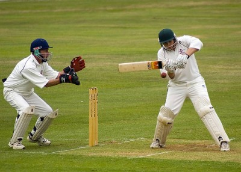

My Portfolio
I would like to give an honest concise and accurate overview of myself .I want this document to give people a better understanding of myself.
Skills
Possess a fair amount of knowledge in web-development using html,css,javascript and bootstrap and have
made some web-pages in my free time.

A quick learner of things and have been known to grasp new things in s short period.
I know the languages of C,C++,Java and Python in computer programming.
Able to multitask on many projects at the same time.
Know Solidworks and can make complicated assemblies using it.
Possess effective time management skills .
Extracurricular Activities
Sports(Football,Cricket and Badminton) at a school or institute level.
Good in athletics at the school level.
An avid blogger.
